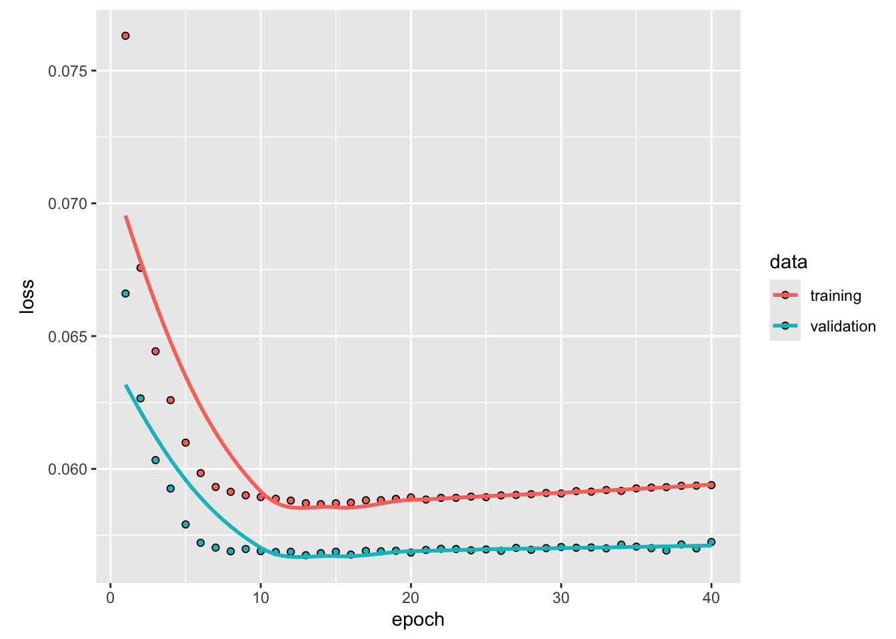
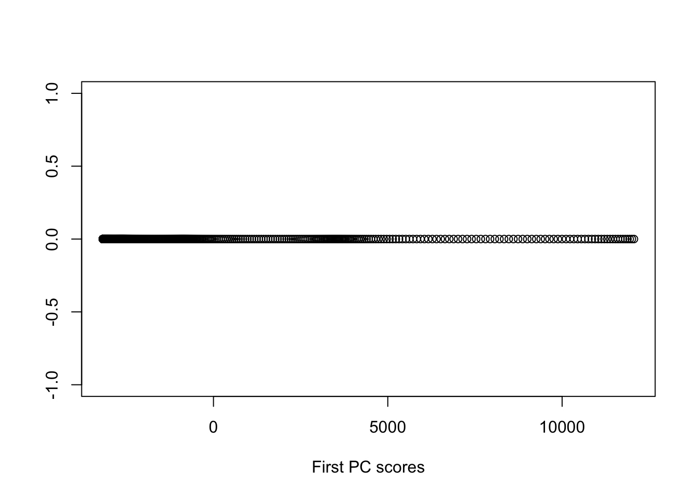

Chapter 5 Kernels and Nonlinearity
The techniques considered in the previous chapter (PCA, NMF, SVD, and classical Scaling) are ill suited to identify nonlinear structure and dependence in data. If we wish to most efficiently reduce dimensions without loss of information, we will need techniques which incorporate nonlinear structure. One can expand a data matrix by including specific nonlinear relationships then apply PCA or SVD but there are numerous problems with this approach. In particular, which relationships does one choose to include? Even including simple quadratic or cubic terms (features) can result in a data matrix with a massive increase in the number of columns. Even when the original dimensionality of the data is moderate, the including of polynomial terms can quickly result in a data matrix of nonlinear features with an untenable number of columns which can make application of the linear methods we have discussed much more computationally demanding to implement.
Kernels are a important class of functions which can be used to kernelize the methods we have discussed before. In theory, these kernelized versions of the linear methods we have discussed can identify and use nonlinear structure for better dimensionality reduction while circumventing the issue of higher dimensional featurized data. This approach follows from an application of the so called ’kernel trick` which we now discuss.
Briefly, a kernel is a function \[k:\mathbb{R}^d\times \mathbb{R}^d \to \mathbb{R}\] which has an associated feature space, \(\mathcal{H}\) and (implicity defined, possibly nonlinear) feature mapping \(\varphi:\mathcal{R}^d \to \mathcal{H}\) such that inner products in the feature space, denoted \(\langle \varphi(\vec{x}), \varphi(\vec{y})\rangle_{\mathcal{H}}\) can be obtained through an evaluation of the kernel, namely \[\begin{equation} k(\vec{x},\vec{y}) = \langle \varphi(\vec{x}), \varphi(\vec{y})\rangle_{\mathcal{H}} \end{equation}\]
Any method which can be expressed involving inner products can be kernelized by replacing terms of the form \(\vec{x}^T_i\vec{x}_j\) with the quantity \(k(\vec{x}_i,\vec{x}_j)\). Thus, we are replacing inner products of our original \(d\)-dimensional data with inner products in the associated feature space \(\mathcal{H}\). Importantly, if we only need inner products, we never need to explicitly compute the feature map \(\varphi\) for any of our data! At first glance this connection may seem minor, but by using kernels we can turn many linear techniques into nonlinear methods including PCA, SVD, support vector machines, linear regression, and many others.
There are some limits though. Not every choice of \(k\) has an associated feature space. A function is only a kernel if it satisfies Mercer’s Condition.
Theorem 5.1 (Mercer's Condition) A function \[k:\mathbb{R}^d\times \mathbb{R}^d \to \mathbb{R}\] has a an associated feature space \(\mathcal{H}\) and feature mapping \(\varphi:\mathbb{R}^d \to \mathcal{H}\) such that \[k(\vec{x},\vec{y}) = \langle \varphi(\vec{x}), \varphi(\vec{y})\rangle_{\mathcal{H}}, \qquad \forall \vec{x},\vec{y}\in\mathbb{R}^d\] if and only if for any \(N \in \{1,2,\dots\}\) and \(\vec{x}_1,\dots,\vec{x}_N\in\mathbb{R}^d\) the kernel matrix \({\bf K}\in \mathbb{R}^{N}\) with entries \({\bf K}_{ij} = k(\vec{x}_i,\vec{x}_j)\) is positive semidefinite. Equivalently, it must be the case that \[\int_{\mathbb{R}^d}\int_{\mathbb{R}^d} g(\vec{x})g(\vec{y}) k(\vec{x},\vec{y}) d\vec{x}d\vec{y} \ge 0\] whenever \(\int_{\mathbb{R}^2}[g(\vec{x})]d\vec{x}<\infty.\)
We will only consider symmetric functions such that \(k(\vec{x},\vec{y}) = k(\vec{y},\vec{x})\) for all \(\vec{x},\vec{y}\in\mathbb{R}^d\). It may not be immediately obvious if a symmetric function satisfies Mercer’s condition, but there are many known examples. A few are shown in the following table.
| Name | Equation | Tuning Parameters |
|---|---|---|
| Radial Basis Function | \(k(\vec{x},\vec{y} = \exp\left(-\sigma\|\vec{x}-\vec{y}\|^2\right)\) | Scale \(\sigma >0\) |
| Laplace | \(k(\vec{x},\vec{y} = \exp\left(-\sigma\|\vec{x}-\vec{y}\|\right)\) | Scale \(\sigma >0\) |
| Polynomial | \(k(\vec{x},\vec{y}) = (c+ \vec{x}^T\vec{y})^d\) | Offset \(c >0\), Degree \(d \in \mathbb{N}\) |
The radial basis function (rbf) is the most commonly used kernel and has an associated feature space \(\mathcal{H}\) which is infinite dimensional! The associated feature map \(\varphi\) for the rbf kernel is \[\varphi(\vec{x}) = e^{-\sigma\|\vec{x}\|^2}\left(a_{\ell_0}^{(0)}, a_{1}^{(1)},\dots,a_{\ell_1}^{(1)}, a_{1}^{(2)},\dots, a_{\ell_2}^{(2)},\dots \right)\] where \(\ell_j = \binom{d+j-1}{j}\) and \(a_\ell^{(j)} = \frac{(2\sigma)^{j/2}x_1^{\eta_1}\dots x^{\eta_d}}{\sqrt{\eta_1!\dots\eta_d!}}\) when \(\eta_1+\dots+\eta_d = j.\) The preceding expression is quite cumbersome, but there is one important point to emphasize. Every possible polynomial combination of the coordinates of \(\vec{x}\) appears in some coordinate of \(\varphi(\vec{x})\) (though higher order terms are shrunk by the factorial factors in the denominator of \(a_\ell^{(j)}\)). Thus, the rbf kernel is associated with a very expressive feature space which makes it a potent but dangerous choice since risks overfitting. To explore these details more, let’s discuss one very important application of kernels in unsupervised learning.
5.1 Kernel PCA
Suppose we have a kernel \(k\) and associated feature map \(\varphi\). In kernel PCA, we want to apply to PCA to the featurized data \(\varphi(\vec{x}_1),\dots,\varphi(\vec{x}_N)\) rather than the original data. The idea is that by studying the featurized data, we can identify additional nonlinear structure in the features that provides a better lower-dimensional representation of the data. We have discussed three approaches to computing PC scores to data: (i) diagonalization of the sample covariance, (ii) applying SVD to the centered data, and (iii) using the duality of PCA and classical scaling.
For the rbf kernel and its infinite dimensional feature map, approaches (i) and (ii) are impossible. Why? The centered data matrix of features \[{\bf H}\tilde{\bf X} = {\bf H}\begin{bmatrix} \varphi(\vec{x}_1)^T \\ \vdots \\ \varphi(\vec{x}_N)^T\end{bmatrix} =\begin{bmatrix} \varphi(\vec{x}_1)^T-\bar{\varphi}^T \\ \vdots \\ \varphi(\vec{x}_N)^T-\bar{\varphi}^T\end{bmatrix} \] has a infinite number of columns so that we cannot compute its SVD. In the above expression, \(\bar{\varphi} = \frac{1}{N} \sum_{i=1}^N \varphi(\vec{x}_i)\) is the mean for the feature vectors. The associated sample covariance matrix \[{\bf \Sigma}_F = \frac{1}{N} \tilde{\bf X}{\bf H}\tilde{\bf X } = \frac{1}{N} \sum_{i=1}^N \left(\varphi(\vec{x}_i) - \bar{\varphi}\right)\left(\varphi(\vec{x}_i) - \bar{\varphi}\right)^T\] will have an infinite number of rows and columns so we cannot hope to diagonalize it either.
Fortunately, the third option, using duality of classical scaling and PC, provides a workaround. Observe that the inner product matrix of the centered feature data \({\bf H}\tilde{\bf X} ({\bf H}\tilde{\bf X})^T\) can be written in terms of the kernel since \[{\bf H}\tilde{\bf X} ({\bf H}\tilde{\bf X})^T = {\bf H} \begin{bmatrix} \varphi(\vec{x}_1)^T \\ \vdots \\ \varphi(\vec{x}_N)^T\end{bmatrix} \begin{bmatrix} \varphi(\vec{x}_1) & \dots & \varphi(\vec{x}_N)\end{bmatrix} {\bf H} = {\bf H K H}\] where \({\bf K}\) has the inner products in the feature space which we can calculate using the kernel function \[{\bf K}_{ij} = \varphi(\vec{x}_i)^T\varphi(\vec{x}_j) = k(\vec{x}_i,\vec{x}_j).\]
Since \(k\) is a symmetric kernel, it follows that \({\bf K}\) is positive semidefinite. Using this property, one can argue that \({\bf HKH}\) will also be positive semidefinite. We can use the eigendecomposition of the doubly centered kernel to compute the kernel principal component scores. Specifically, if \({\bf HKH}\) rank \(r\) with eigenvalues \(\lambda_1\ge \dots \ge \lambda_r >0\) and corresponding eigenvalues \(\vec{u}_1,\dots,\vec{u}_r \in \mathbb{R}^N\), then \({\bf HKH}\) factorizes as \[{\bf HKH} = \underbrace{\begin{bmatrix}\vec{u}_1 & \dots &\vec{u}_r\end{bmatrix} \begin{bmatrix} \lambda_1^{1/2} &0 &0 \\ 0& \ddots & 0 \\ 0 &0 & \lambda_r^{1/2} \end{bmatrix}}_{{\bf U\Lambda}^{1/2}} \left({\bf U\Lambda}^{1/2}\right)^T. \]
The rows of the matrix \({\bf U\Lambda}^{1/2}\) are almost the kernel PC scores. The only issue is an additional the identity \[{\bf HKH} = ({\bf H}\tilde{\bf X})({\bf H}\tilde{\bf X})^T\] is missing the factor of \(1/N\) appearing in the covariance calculation. Accounting for this, the first \(r\) non-zero kernel PC scores are the rows of the matrix \[\frac{1}{\sqrt{N}} {\bf U\Lambda}^{1/2}\] and the corresponding nonzero PC variances are \(\lambda_1/N,\dots,\lambda_r/N.\)
Notably, at no point do we compute the PC loadings! However, similar to standard PCA, we use the scores for dimension reduction and the PC variances for choosing a dimension. Without the loadings, we cannot recompute the original data. Below, we show an application of kernel PCA to the helix and demonstrate its ability to identify the one-dimensional structure of the helix and its sensitivity to kernel selection and tuning.
Example 5.1 (Kernel PCA applied to the Helix) First, we show the kPCA variances for three different kernels and tuning parameters. The data are regularly spaced points along the helix.

From these graphs, one would infer very different lower dimensional choices depending on the kernel and parameters. The polynomial kernel provides the most robust estimate of the one-dimensional nature of the data.
Figure 5.1: kPCA Variances for different Kernels
Below, we show the recovered one-dimensional coordinates for the polynomial kernel with offset 1 and degree 4 shown below, which is good, but do not quite reflect the equal spaced nature of the points.

As the preceding example demonstrates, kernel PCA can identify nonlinear structure, but is quite sensitive to kernel selection and tuning. More advanced implementations make use of cross-validation to aid in the selection and tuning of the kernel [19].